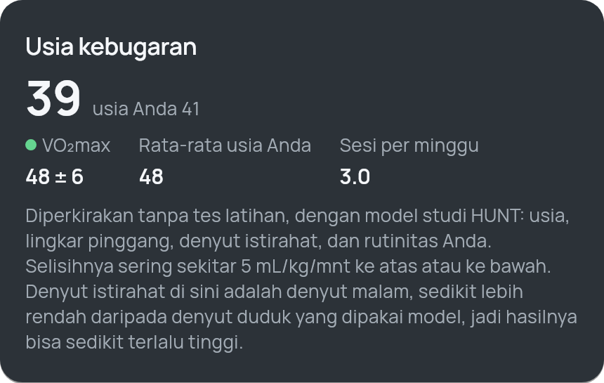
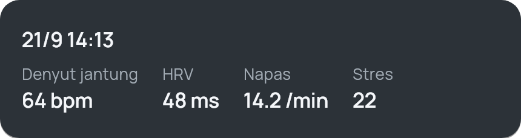

Kebugaran yang dihitung di HP Anda.
ProjectFit membaca band WHOOP dan jam Garmin, lalu menghitung recovery, strain, tidur, stres, dan Body Battery langsung di HP. Tanpa akun, tanpa server, tanpa langganan.
iPhone dan Android · open source (AGPL-3.0)
Fitur
Angka yang biasa ada di cloud, kini di saku Anda.
Setiap angka dihitung dengan metode yang dipublikasikan, dengan konstanta yang ditulis terbuka. Kalau datanya belum cukup, ProjectFit bilang begitu, bukan menebak.
Stres & Body Battery
Stres 0–100 dihitung hanya saat Anda diam, dibanding variasi jantung Anda di malam hari. Body Battery terisi saat tidur dan terkuras oleh aktivitas.
Tidur
Skor tidur 0–100 dengan bobot terbuka, di samping kebutuhan tidur pribadi, utang tidur, tahap tidur, dan laju napas.
Kebugaran
Usia kebugaran dan VO₂max dari rutinitas Anda (model studi HUNT), menit intensitas mingguan, dan fokus beban latihan.

Health Snapshot
Dua menit duduk diam: denyut jantung, HRV, laju napas, dan stres disimpan sebagai satu catatan.

Privasi
Data kesehatan Anda tidak pernah meninggalkan HP.
Tidak ada akun dan tidak ada server ProjectFit. Band disambungkan lewat Bluetooth langsung ke aplikasi.
Dihitung di perangkat
Semua metrik dihitung di HP dari data mentah band. Bisa dipakai tanpa internet.
Tanpa akun
Tidak perlu mendaftar. Cadangan data dienkripsi dan disimpan di tempat yang Anda pilih.
Kode terbuka
Seluruh kode ada di GitHub dengan lisensi AGPL-3.0, jadi siapa pun bisa memeriksanya.
Pasang
Gratis untuk iPhone dan Android.
ProjectFit belum ada di App Store maupun Play Store. Pasang langsung dari rilis GitHub.
iPhone
iOS 15 ke atas · Apple ID gratis
- iOS 27 ke atas: pasang SideStore, lalu tambahkan sumber ProjectFit.
- iOS 15–26: unduh ProjectFit.ipa, lalu pasang dengan Sideloadly dari komputer.
Android
Android 8.0 ke atas
- Unduh ProjectFit.apk dari rilis terbaru.
- Buka filenya dan izinkan pemasangan dari sumber ini.
- Beri izin Bluetooth (Perangkat di sekitar) saat pertama dibuka.